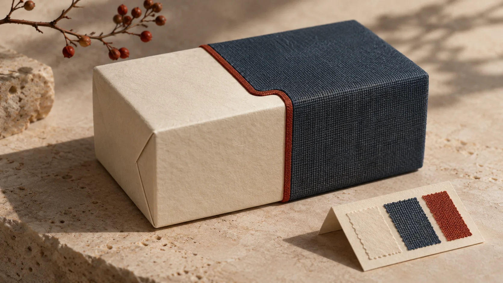
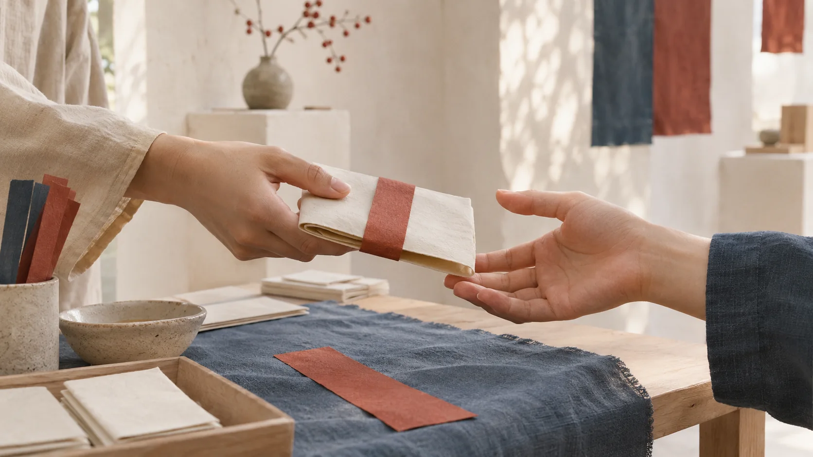

FEATURE
WECHAT · CONTENT BRIEF
联名越做越多，消费者为什么反而记不住？
打开社交平台，联名几乎无处不在：饮料换上限定包装，餐饮门店摆出拍照装置，两个品牌把 Logo 并排放进一张海报。上新当天很热闹，但活动结束几周后，消费者往往只记得“好像见过”，却说不清两个品牌为什么要走到一起。
问题并不是联名不够醒目，而是许多联名只完成了曝光，没有形成记忆。

01
热闹，不等于被记住一次联名能否留下价值，可以拆成三个层次来看。
术语索引
视觉刺激
颜色、包装、装置和限定周边负责抓住第一眼。它们让人停下来，却不能单独回答“这次合作与我有什么关系”。
参与理由
消费者为什么愿意购买、到店、拍照或分享？可能是实用价值、身份表达，也可能是一次有趣的共同体验。没有参与理由，视觉只会停留在屏幕里。
品牌资产
活动结束以后，消费者对双方留下了什么新认识？好的联名会强化双方原本的特点，并创造一个以后还能被继续使用的符号、故事或产品习惯。
这三个层次缺少任何一层，联名都容易变成一次昂贵的“路过”。
02
三种最常见的无效联名
只把 Logo 放在一起： 两个品牌并排出现，但没有共同完成新的内容、产品或体验；
只追求反差感： 组合足够意外，却与双方用户的真实兴趣没有关系；
只制造稀缺： 限时、限量和抢购带来短期行动，却没有留下值得复述的故事。
这三种做法的共同点，是把“被看见”误当成了“被记住”。
真正有效的联名，不是把两个名字放在一起，而是让两个品牌共同完成一件单独做不到的事。
03
有效联名共享的不是流量，而是一段体验同样是合作，设计重点不同，活动结束后留下的东西也完全不同。
| 联名方式 | 用户得到什么 | 活动结束后留下什么 |
|---|---|---|
| 更换包装 | 新鲜感与收藏欲 | 一次短期曝光 |
| 共创内容 | 可讨论、可分享的话题 | 一段共同叙事 |
| 共建体验 | 可以亲自参与的行动 | 对双方品牌的新认知 |
因此，联名方案不应从“海报怎么做”开始，而应先定义用户经历了什么变化：他发现了什么、参与了什么，又愿意把什么讲给别人听。

04
上新之前，先问这四个问题用户为什么要参与？ 除了限定二字，还有没有真实的利益、情绪或表达价值；
两个品牌分别贡献什么？ 如果拿掉其中一方，这件事是否依然成立；
不看 Logo，能否认出双方？ 产品语言、内容语气和体验细节是否保留各自特征；
活动结束后沉淀什么？ 是一次销量、一个内容栏目，还是可以继续发展的产品与社群关系。
当这四个问题能够被清楚回答，视觉才有真正的任务：放大共同体验，而不是替一段空洞关系制造声量。
联名不是两个品牌借用彼此的注意力，而是双方共同创造一个值得消费者参与、记住并复述的理由。
先设计记忆，再设计海报；先找到共同体验，再追求全网刷屏。